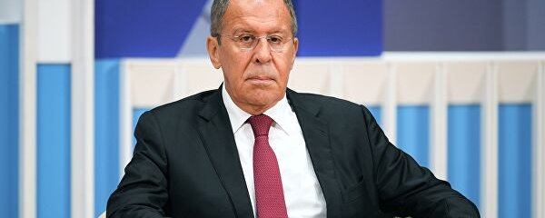
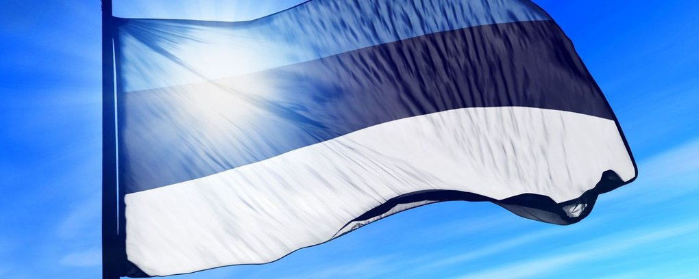
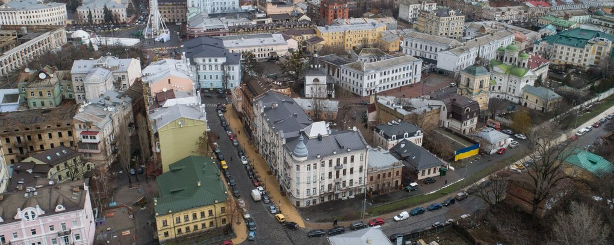
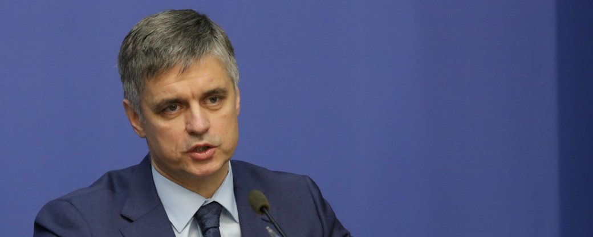

"Ми на межі провалля". Прем’єр Великої Британії вважає реальною загрозу вторгнення РФ в Україну

Прем’єр-міністр Великої Британії Борис Джонсон під час візиту до Шотландії 14 лютого підтвердив, що загроза вторгнення Росії в Україну залишається реальною, але сподівається, що Володимир Путін обере шлях деескалації.
Про це повідомляють Sky News і The Independent.
"Ми повинні усвідомити, що ситуація — дуже небезпечна і складна. Ми на межі провалля. Але президент (Росії — ред.) Володимир Путін ще має час, щоб відступити", — заявив Джонсон і додав, що не виключає можливості вторгнення протягом "48 годин".
Він нагадав, що, за оцінками західної розвідки, біля кордонів з Україною РФ зосередила близько 130 тисяч військових. За словами британського прем’єра, Лондон прагне, щоб сторони відновили діалог, а конкретно Росія — уникла "руйнівної для себе помилки".
Це не перша подібна заява Джонсона. Раніше він стверджував, що РФ готує "бліцкриг" проти України, а російське вторгнення обернеться для Москви "другою Чечнею".
17 січня Британія надіслала першу партію легкого протитанкового озброєння Україні. А пізніше міністерка закордонних справ Великої Британії Ліз Трасс повідомила, що Лондон розглядає можливість створення Тристороннього союзу з Польщею та Україною.
10 лютого парламент Великої Британії дозволив уряду посилювати санкції проти Росії. Новий закон створює умови для запровадження жорстких санкцій проти Росії у випадку подальшої агресії.
Джерело: Суспільне
"Отримали ми два маленьких папірці". Лавров заявив, що РФ невдоволена відповіддю НАТО і США
Міністр закордонних справ Сергій Лавров заявив Володимиру Путіну, що відповіді НАТО та США на вимоги Росії щодо "гарантій безпеки" не задовольняють РФ. Він заявив, що шанси домовитися з Заходом досі є.
Про це міністр закордонних справ РФ Сергій Лавров заявив під час зустрічі з президентом РФ Володимиром Путіним. Головною темою зустрічі було обговорення відповідей США та НАТО на вимоги Росії.
"Нас цікавить США передусім, зрозуміло, хто грає головну роль у вирішенні питань в західному таборі. Відповідь США складається з двох частин. Перша частина — реагують на три наші ключові питання, які ми визначили, — не розширення НАТО, нерозміщення ударного озброєння, що нам загрожує, і в цілому повернення військової-технічної конфігурації у Європі на позиції 1997 року, коли був підписаний основоположний акт Росії і НАТО", — повідомив Лавров.
Міністр також сказав, що відповіді за всіма російськими вимогами є негативними та не задовольняють РФ.
"І я отримав незадовільні відповіді, ніхто з моїх колег-міністрів не відповів на моє пряме послання, отримали ми два маленьких папірці. Один — від чиновника Столтенберга, генсека НАТО, інший — від чиновника Борреля, голови дипломатії Європейської зовнішньополітичної служби", — каже міністр.
Лавров також заявив, що Росія надалі вимагатиме відповіді від кожної країни НАТО окремо.
Володимир Путін під час зустрічі заявив, що розширення НАТО на Схід за рахунок колишніх республік, в тому числі України, є "дуже небезпечним" для РФ.
Джерело: Суспільне
Естонія не евакуюватиме дипломатів з України попри ситуацію на кордоні з РФ
Уряд Естонії вирішив не евакуювати з України співробітників дипломатичних установ та не виводити військових інструкторів попри загрозу вторгнення Росії.
Як повідомляє ERR, таке рішення члени естонського уряду ухвалили на екстреному засіданні 14 лютого.
"Хоча ситуація в Україні напружена, посольство Естонії в Києві обов'язково продовжить роботу і зможе запропонувати естонцям допомогу у виїзді з України, але важливо наголосити, що якщо ситуація ускладнюватиметься, надання необхідної допомоги може бути суттєво утруднене з незалежних від нас причин", — сказала міністерка закордонних справ країни Ева-Марія Лійметс.
При цьому вона додала, що громадянам Естонії, які перебувають в Україні, важливо чітко дивитися на свої плани поїздок та спланувати шляхи виїзду з країни.
Окрім того, міністр оборони Калле Лаанет заявив, що Естонія залишить в Україні своїх військових інструкторів.
"Естонія уважно стежить за розвитком подій із союзниками, і підтримка союзниками нашого регіону залишається твердою", — зазначив він.
Джерело: Суспільне
Греція скорочує посольство в Києві, перенаправляючи дипломатів в Маріуполі
МЗС Греції рекомендувало своїм громадянам незабаром покинути Україну, при цьому відомство анонсувало скорочення свого дипломатичного представництва в Києві, перенаправляючи працівників до генконсульства у Маріуполі.
Міністерство закордонних справ категорично не рекомендує їздити до України і водночас рекомендує громадянам Греції, які перебувають у країні, негайно її покинути. Штат посольства Києва скоротився до необхідного. Водночас буде посилено штат Генерального консульства у Маріуполі", – ідеться у повідомленні МЗС.
Джерело: Суспільне
Пристайко: Поступки під час перемовин з Росією не стосуються прагнень вступити до НАТО
Посол України у Великій Британії Вадим Пристайко пояснив свою недавню заяву щодо можливості України відмовитися від прагнення вступити в НАТО.
Про це повідомляє BBC.
"Я радий, що маю можливість говорити з вами та пояснити свою позицію щодо того, що я обговорював вчора з журналістом. Питання яке він поставив і створило все непорозуміння. Я сказав йому, що ми не є членом НАТО наразі. І для того аби уникнути війни, ми готові до поступок. І це те, що ми робимо вже під час перемовин з росіянами. Але це не стосується НАТО, яке прописане в Конституції", — заявив посол.
Що кажуть у МЗС України
"Слова посла України у Великій Британії Вадима Пристайка про те, що Україна нібито готова розглянути відмову від членства в НАТО задля запобігання війні з Росією вирвані з контексту. Безумовно, заради миру і збереження життів наших громадян Україна готова йти на будь-які формати діалогів з країнами та міжнародними організаціями", — зазначив речник українського МЗС Олег Ніколенко.
Він зауважив, що перспектива членства в НАТО закріплена в Конституції України, але Україна наразі не є членом НАТО чи іншого безпекового альянсу.
"Ключовим для нашої країни стає питання гарантій безпеки. Безперечно, найкращою такою гарантією був би негайний прийом України до Альянсу. Але загрози Україні існують тут і зараз, відтак пошук відповіді на питання гарантій стає фундаментальним нагальним завданням. При цьому, жодне рішення не може бути ухвалене всупереч Конституції України", — наголосив Ніколенко.
Джерело: Суспільне